TwinGround is a web system that finds Earth analogs for any location on the Moon or Mars. The user picks a window of 20, 40 or 80 km on a 3D globe, describes a site in plain language, or uploads an image. TwinGround reads the window’s properties from NASA orbital data and ranks about 484,000 Earth windows as analog candidates for a chosen use: ISRU resources, mobility, thermal work or base siting. Each candidate comes with an explanation (which properties match, which do not, and which Earth cannot supply at all), side-by-side 3D terrain, a site dossier (dryness, geology, what can be tested there, field season, nearest road, town and airport), and an astronaut explorer for walking both sites.
Behind the system is a research study, The Earth Ceiling: Quantifying the Limits and Systematic Biases of Terrestrial Analogs for the Moon and Mars. It places 117 lunar and Martian query windows and 75,860 terrestrial windows in one property space harmonized in units, spatial support and sensing depth, and defines the Earth ceiling as the best use score any measured terrestrial window can reach. Every confirmatory test was frozen with a SHA-256 hash before its Earth data were read.
NASA plans a sustained human presence near the lunar south pole under Artemis, and later on Mars. Before that, rovers, excavators, ISRU plants, habitats and crews must be tested on Earth. Terrestrial analogs have served this role for decades, and the inference they license is functional: a site is an analog for the properties a given test depends on. A basaltic lava field may serve a mobility test and still differ from the feedstock chemistry of an ISRU trial, and neither may reproduce the thermal environment a habitat must survive.
In practice, analog sites are chosen mainly from expert experience and curated lists such as NASA’s Planetary Analog Explorer, and they are described by setting: arid, unvegetated, basaltic, volcanic, cold. The Atacama Desert, Hawaiian volcanoes and the McMurdo Dry Valleys for Mars, and young basaltic fields such as Craters of the Moon for lunar lava terrain, are canonical examples. Selection by setting has real strengths (access, prior work, several useful features at once), but it has never given a quantitative answer to two questions:
Answering them is harder than it looks. Lunar and Martian chemistry comes from orbital gamma-ray spectrometers whose footprints span tens to hundreds of kilometres, whereas Earth chemistry comes from airborne surveys, soil samples and rock analyses whose supports range from hand specimens to kilometres. Topography, albedo and temperature differ in resolution, illumination and local time. TwinGround solves this harmonization gap first, then ranks and explains.
We addressed three research questions:
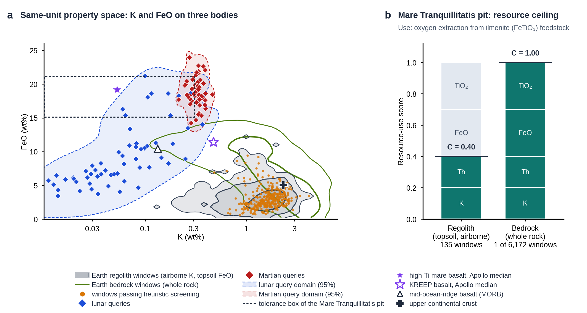
To build a cross-body property space in which a lunar or Martian window and an Earth window are described by the same quantities, in the same units, averaged over the same area and sensing the same depth. Each window carries a property vector x = (FeO, TiO₂, K, Th, albedo, roughness, Tday, Tnight).
| Property | Moon | Mars | Earth reference | Support and harmonization |
|---|---|---|---|---|
| FeO, TiO₂ (wt%) | Lunar Prospector GRS | Mars Odyssey GRS (Fe; no Ti) | Topsoil: USGS DS801, NGSA (Australia), FOREGS (Europe). Whole rock: GEOROC | Fe and Ti as oxides (TiO₂ = 1.668 Ti); 40 km window (Moon), 220 km disk (Mars) |
| K (wt%), Th (ppm) | Lunar Prospector GRS | Mars Odyssey GRS | Airborne gamma-ray surveys of Australia (Radiometric Map v4 2019) and North America (NAMrad) | Orbital footprint kernel applied to Earth grids (Eq. 1); coverage ≥ 80% of kernel weight |
| Albedo | LROC WAC I/F; LOLA normal albedo (secondary proxies) | MGS TES Lambert albedo | GLASS snow-free albedo | 40 km window mean |
| Roughness (°) | LOLA DEM | MGS MOLA MEGDR | NOAA ETOPO 2022 | Median slope after area-averaging to 1.88 km (MOLA spacing) on all three bodies |
| Surface temperature (K) | LRO Diviner (outside Earth range; not scored) | Mars Climate Database (model) | MODIS MOD11A2 | Local times of the MODIS Terra overpass (≈10:30 and 22:30) |
| Setting criteria | USGS Unified Geologic Map of the Moon | USGS SIM 3292; SWIM ice; OMEGA, CRISM | GLiM, ESA WorldCover, Köppen–Geiger, Aridity Index, SoilGrids, Smithsonian GVP volcanoes | Categorical verdicts (match / partial / mismatch) |
| Polar illumination | LOLA average illumination and permanent shadow | – | – | 240 m maps aggregated to windows |
GRS = gamma-ray spectrometer. Lunar values are 40 km window means; Martian chemistry is compared at the 220 km Mars Odyssey footprint.
Targets and candidates are square tangent-plane windows of side L ∈ {20, 40, 80} km, compared only at equal L. The Earth index holds every ETOPO 2022 land window with at most 5% sea: 484,015 windows (326,374 at 20 km, 75,860 at 40 km and 81,781 at 80 km), reaching about 84° N–S. The 117 query windows comprise 37 named sites (19 lunar, including 6 south-polar windows chosen from LOLA illumination maps, and 18 Martian) and 80 windows drawn uniformly at random before any of their values were examined (40 on the Moon within 60° of the equator, 40 on Mars within 55°).
Orbital gamma-ray spectrometers and airborne gamma-ray surveys both sense the upper few tens of centimetres in the same units, but their spatial supports differ by orders of magnitude. Earth grids are therefore blurred with the footprint kernel of the orbital instrument before they are compared:
where xk(si) are grid values at distance di from the window centre w. The lunar kernel is a Gaussian of 45 km full width at half maximum (the footprint of one Lunar Prospector measurement at 30 km altitude), truncated at 3σ; the Martian kernel is a 220 km disk, about the radius within which Mars Odyssey receives half of its signal. A window counts as covered when at least 80% of the kernel weight has data (9,904 windows at the lunar kernel and 8,079 at the Martian kernel).
To see what this averaging hides, the comparison was repeated on a ladder of supports: native airborne grids sampled on a 1 km lattice and averaged over blocks of 1, 2, 4, 8, 20 and 40 km, with individual whole-rock analyses standing for hand specimens.
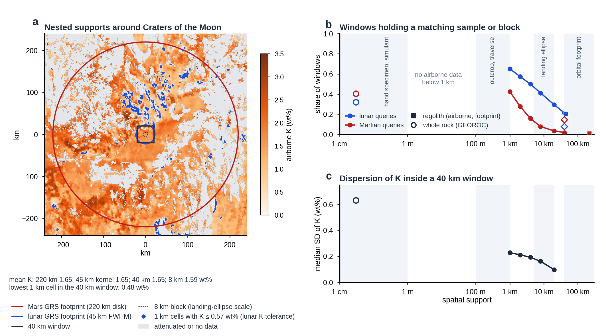
Earth chemistry enters along two tracks that differ in what they sample:
Of the 75,860 Earth windows at 40 km, 4,610 have measured topsoil FeO, 4,165 unattenuated airborne K and Th and 6,172 whole-rock FeO, TiO₂, K and Th; 616 windows have FeO on both tracks and 88 have all four properties on both, which lets the two tracks be compared in the same places. Albedo, roughness and surface temperature are shared by both tracks. For petrological reference, 923 whole-rock analyses of Apollo 11, 12, 14, 15 and 17 basalts were taken from the Astromat lunar sample synthesis.
Every source was checked for whether it can enter a same-unit comparison. Sources or uses that could not were excluded from scoring or limited to display:
| Data / use | Decision | Technical reason |
|---|---|---|
| LROC WAC 643 nm mosaic as lunar albedo | Secondary proxy only | The product is I/F normalized to 60° incidence and phase, not an albedo; treating it as albedo would bias the comparison with GLASS. |
| Lunar day and night temperatures (Diviner) | Shown, not scored | They lie outside the terrestrial range; permanently shadowed cold traps reach about 25 K. They are reported as a limit, not a score. |
| Martian surface temperature | Scored, labelled as model | No orbital product gives temperatures at the MODIS overpass times, so the Mars Climate Database (a model) is used and labelled as such. |
| Airborne K and Th under water or vegetation | Masked | Water (≥ 10%, ESA WorldCover) and tree, crop and wetland cover (≥ 30%) attenuate gamma rays and would read as falsely low K and Th. |
| Earth chemistry estimates far from measurements | Not scored | Cross-continent transfer failed in every test (R² below 0.30); estimates beyond 300 km are reported as “no reliable estimate”. |
| Mini-RF (S band) vs Sentinel-1 (C band) radar | Class comparison only | Different wavelength and polarization (circular vs linear dual); values are not physically comparable. |
| Esri World Imagery | Display only | Not open data and not redistributable; it drapes the 3D terrain with visible attribution and never enters ranking. |
| Known-analog catalogue | Not an input | Used only to label candidates and to test screening; using it in ranking would make the evaluation circular. |
Given a planetary query window q with property vector xq, a set of Earth windows E, and a use u (resources, mobility, thermal, base siting), we want (i) a ranking of E by how well each window supplies the properties u requires, and (ii) the best score any measured Earth window can reach. A match is defined by a tolerance τk in physical units, fixed before any Earth value was read: FeO ±3 wt%, TiO₂ ±1.5 wt%, K ±0.2 wt%, Th ±2 ppm, albedo ±0.05, roughness ±1°, temperature ±20 K.
For a query q, an Earth window e and a property k:
A measured value enters through the indicator; an estimated value enters through a normal predictive distribution with mean μk and scale σk = (uk − lk) / (2 z0.95) taken from its 90% conformal interval [lk, uk]. Uncertain estimates therefore earn partial credit instead of a hard yes or no.
Ku(q) is the set of the use’s properties available for the query and Emeas the Earth windows with measured values. A ceiling of 1 means at least one measured window lies within tolerance on every required property. A ceiling below 1 has one of three causes: a composition no window reaches, a thermal or radiative regime none reaches, or properties that are each reachable alone but never in the same window.
| Use | Properties and weights wu,k |
|---|---|
| Resources (ISRU feedstock) | FeO 0.3, TiO₂ 0.3, K 0.2, Th 0.2 |
| Mobility | Roughness 1.0 |
| Thermal environment | Tday 0.35, Tnight 0.35, albedo 0.3 |
| Base siting | Roughness 0.5, Tnight 0.25, albedo 0.25 |
Because weights and tolerances are conventions, every ceiling was recomputed under 1,000 random weightings per query and use (Dirichlet, unit concentration) and with all tolerances scaled by 0.5, 1.5 and 2.
To judge a ranking method against held-out measurements we use:
Ḡ is the mean share of a method’s first 30 spatially distinct candidates (centres at least 1.5 L apart) that lie within tolerance on held-out measured values, R̄ the same share for random order and Ū for an oracle ranking by the measured values. RE is 0 for random order and 1 for ranking by the measurements themselves.
To represent current practice, what a query asks of a place on Earth was encoded as qualitative criteria derived from the query’s own maps, the way an expert would describe a site. On the Moon the setting comes from the USGS Unified Geologic Map and Lunar Prospector FeO class; on Mars from the USGS global geologic map, SWIM ground-ice indicators and OMEGA/CRISM descriptors. The criteria (dryness, bare ground, cold, frozen ground, basaltic or sedimentary lithology, nearness to basaltic volcanoes, aeolian or hydrated settings, low sun) are evaluated on Earth from GLiM, WorldCover, Köppen–Geiger, the Aridity Index, SoilGrids and the Smithsonian volcano catalogue. Each criterion returns match, partial or mismatch; the fit F(e) is their mean, and windows with F ≥ 0.75 form the candidate pool. The screening uses no chemistry, albedo or roughness, so those properties test it independently.
Measured chemistry covers a small part of the land surface, so K, Th, FeO and TiO₂ were also estimated for unmeasured windows from covariates that contain no chemistry (lithology, land cover, climate, soil texture and cation exchange capacity, relief, surface temperature, albedo, terrain shape and reflectance), with gradient-boosted trees and 90% conformal intervals. Two designs were evaluated: interpolation (labels within 100 km of each test window hidden) and transfer (a whole continent withheld). On identical folds the trees were compared with nearest neighbours in covariate space, inverse-distance weighting and a Gaussian process on location.
For every confirmatory test, the query values, candidate sets, statistics and decision criteria were written to a protocol file whose SHA-256 hash was recorded before any Earth data used in that test were read, so neither candidate pools nor hypotheses could be tuned to the validation data. Screening was tested with match-rate differences between pool members and random windows, one-sided permutation tests, two-stage bootstrap intervals and exact sign-flip tests over distinct pools, plus an Earth-to-Earth positive control. All models were trained with a single random seed. Analyses added after results were seen (including the Earth-ceiling framing itself) are labelled post hoc.
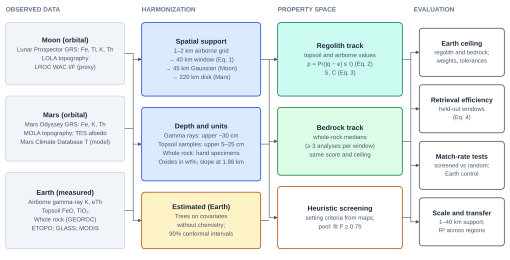
Single-property physical uses are satisfiable everywhere: every query has Earth windows within tolerance on kilometre-scale roughness, so the mobility ceiling is 1 for all 117 queries. Composition is not. No lunar query reaches a resource ceiling of 1; the mean is 0.75. The Martian mean is 0.61, no Martian query reaches 1 for the thermal environment (mean 0.56) or base siting (0.75). Among 71 use ceilings below 1 for the named queries, 18 are limited by a composition no Earth window reaches, 16 by a thermal or radiative regime none reaches, and 37 by properties never found together.
On the bedrock track the mean resource ceiling rises to 0.98 (Moon) and 0.995 (Mars), but the matching windows are rare: a median of 41 of 6,172 whole-rock windows (0.66%) for lunar queries and 6 (0.10%) for Martian ones. The compositions exist in Earth’s rock record, but as isolated occurrences rather than as the regolith that footprints average and field operations traverse.
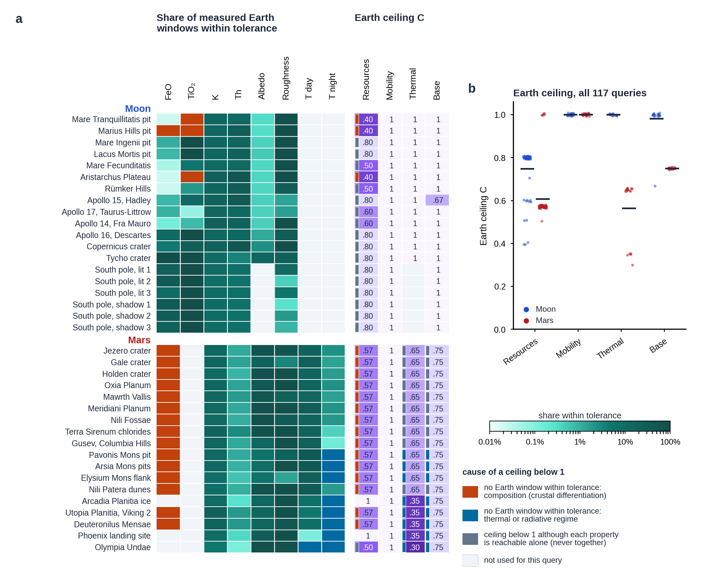
| Site | FeO | TiO₂ | K | Th | Regolith ceiling (windows) | Bedrock ceiling (windows) | Not reachable | Where |
|---|---|---|---|---|---|---|---|---|
| Mare Tranquillitatis pit (Moon) | 18.1 | 7.6 | 0.11 | 2.7 | 0.40 (135) | 1.0 (1) | TiO₂ | W. and S. Australia |
| Marius Hills pit (Moon) | 21.2 | 7.8 | 0.10 | 4.4 | 0.40 (243) | 0.80 (1) | FeO, TiO₂ | W. and S. Australia |
| Apollo 16, Descartes (Moon) | 7.6 | 0.86 | 0.09 | 2.9 | 0.80 (16) | 1.0 (40) | – | Oregon, California |
| South pole, lit 1 (Moon) | 6.7 | 0.09 | 0.04 | 1.9 | 0.80 (6) | 1.0 (105) | – | Oregon, California |
| Jezero crater (Mars) | 21.4 | – | 0.32 | 0.6 | 0.57 (15) | 1.0 (3) | FeO | Alaska, Saskatchewan |
| Gale crater (Mars) | 18.0 | – | 0.34 | 0.6 | 0.57 (28) | 1.0 (7) | FeO | Alaska, Saskatchewan |
| Olympia Undae (Mars) | – | – | 0.16 | 0.2 | 0.50 (377) | 1.0 (445) | Day and night T | W. Australia, N. Territory |
FeO, TiO₂, K in wt%; Th in ppm. Lunar values are window means, Martian values footprint means.
Where both tracks are measured in the same windows, topsoil holds a median of 3.6 wt% FeO against 8.1 wt% in the rock, is lower in 79% of windows (99.6% where the rock is mafic), and is uncorrelated with it (Spearman ρ = −0.02). Airborne thorium exceeds whole-rock thorium (9.4 vs 5.1 ppm), as expected where weathering removes mobile elements and retains thorium in resistant minerals. In the 88 windows with all four properties on both tracks, whole rock matches every resource property of 25 of 59 lunar queries and topsoil of none. The shortfall therefore has two sources: weathering (highland, low-Ti and polar lunar targets) and petrogenesis (high-Ti mare basalt and Martian crustal iron, rare even in rock). Earth has no lunar-type ilmenite cumulates and no iron-rich mantle like Mars: 99.9% of 91,461 terrestrial basaltic analyses have at most 5.6 wt% TiO₂, while Apollo 11 and 17 basalts have mission medians of 11.2 and 12.1 wt%.
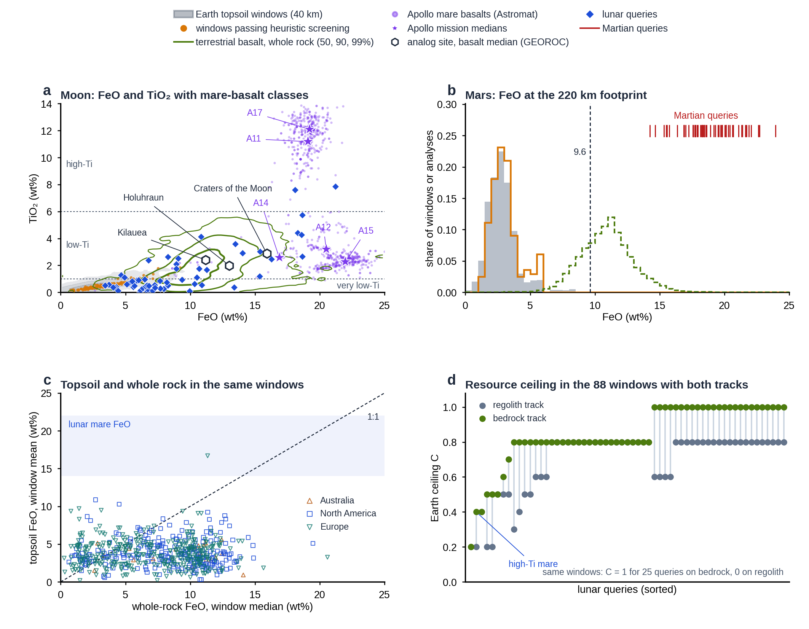
No positive weighting can create a window that matches every property where none exists, so queries with ceilings below 1 keep them under all 1,000 random weightings. The value moves (lunar mean resource ceiling 0.63–0.97 between the 5th and 95th percentile of weightings), but even at twice the tolerances two high-titanium lunar queries keep no Earth window within the TiO₂ tolerance and 47 of 52 Martian queries none within the FeO tolerance.
Judged against a catalogue of 80 known analog sites, heuristic screening did what it was designed to do: a random top 30 from the pool contained catalogued analogs of the expected type 12.2 times more often than a random top 30 from all windows (95% CI 7.0–19.1). But measured with data the screening did not use, screened candidates were not closer to their query than random windows (+1.3 percentage points; 95% CI −3.2 to 5.2). At the gamma-ray footprint the result reverses: for lunar and Martian queries screened candidates matched footprint-scale K and Th 7.6 points less often than random windows (all 13 pools negative), confirmed on the 80 random queries (−7.5 points; all 20 distinct pools negative). An Earth-to-Earth positive control showed the test has resolution (+5.6 points when the query was itself an Earth window).
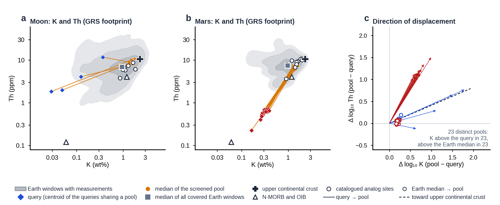
| Diagnostic test | Heuristic screening | Property-level retrieval | Null |
|---|---|---|---|
| Catalogued analogs of expected type in a random top 30 | 12.2-fold denser (7.0–19.1) | Catalogued sites rank at the 43rd–55th percentile | 1-fold |
| Match rate within tolerance, same-unit properties | +1.3 points (−3.2 to 5.2) | – | 0 |
| Footprint K and Th, lunar and Martian queries | −7.6 points (−9.5 to −5.6); 13 of 13 pools negative | – | 0 |
| Retrieval efficiency, lunar-type FeO / K / Th | 0.02 / −0.19 / 0.00 | 0.52 / 0.58 / 0.77 | 0 (random); 1 (measured) |
| Retrieval efficiency, K at the Martian footprint | −0.21 | 0.27 (90% CI 0.24–0.30) | 0; 1 |
Near measurements, Earth chemistry can be estimated. Within 300 km of measurements, R² was 0.64 (K), 0.41 (Th), 0.40 (FeO) and 0.32 (TiO₂), with 90% intervals covering 90–93% of test windows. The trees beat covariate nearest neighbours, inverse-distance weighting and a Gaussian process on location for all four targets. Across continents, it cannot. Models trained on Australia or North America and tested on the other failed for every target (R² from −4.68 to −0.13). The reason is geological: deep, long-lived weathering on the stable Australian continent leaches potassium and leaves thorium (median Th/K 12.4 vs 4.9 in North America), and no global covariate describes the depth and age of the weathering profile. TwinGround therefore uses estimates only near measured ground and says “no reliable estimate” elsewhere.
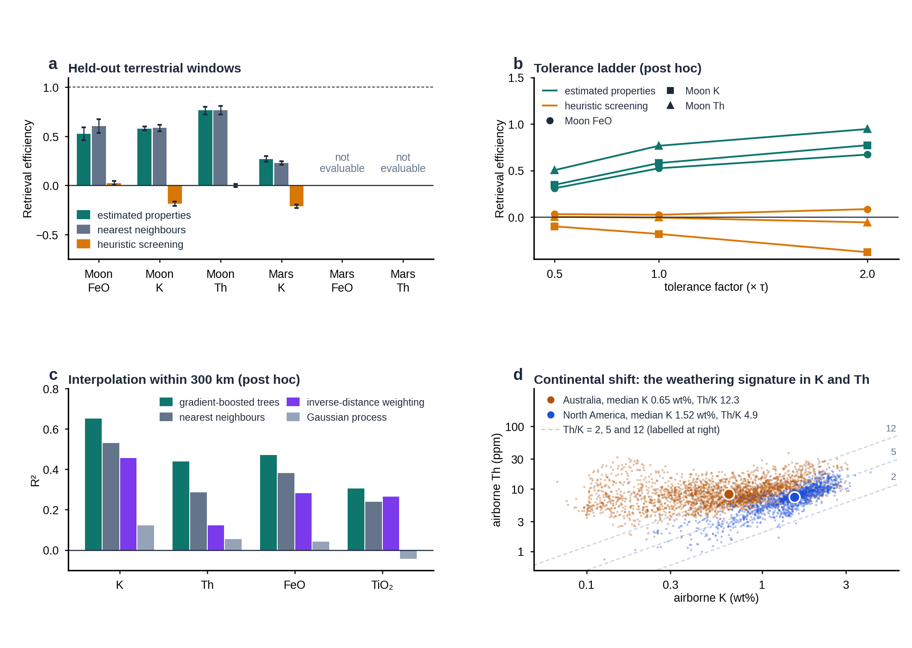
Scale matters. 65% of covered Earth windows contain at least one 1 km cell whose airborne K and Th lie within tolerance of some lunar query, but the share falls to 41% at 8 km and 21% at 40 km: lunar-like patches are common on Earth and are averaged away by the footprint. They do not occur at the canonical lunar sites: within the Craters of the Moon and Meteor Crater windows no 1 km cell matches any lunar query in K and Th together. Kilometre-scale terrain shape alone recovered at most two catalogued analogs over 31 queries, which marks the resolution limit of present global planetary DEMs.
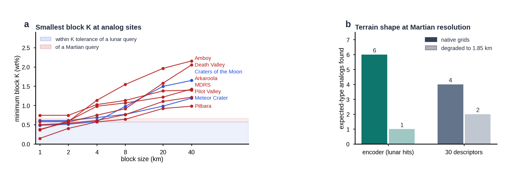
Artemis south pole. Terrain and mobility rehearsals can use any site whose kilometre-scale roughness matches. Highland-like FeO, TiO₂ and Th exist at regolith scale in central Oregon and northern California (ceiling 0.80; only lunar potassium, 0.03–0.04 wt%, is missing) and at bedrock scale in 173 windows worldwide. The illumination and thermal regime has no Earth counterpart: the Sun never rises more than about 7.5° above these windows and cold traps fall to about 25 K. Catalogued lunar sites reach at most 0.60 for this use (Nördlinger Ries, Lava Beds), and Craters of the Moon reaches 0.
Jezero crater. Regolith-scale resource ceilings stop at 0.57 (K and Th matched in southwestern Alaska and Saskatchewan, FeO not). At bedrock scale three windows match FeO, K and Th together, in northeastern Brazil, northwestern Ontario and southwestern Finland, which shows where iron-rich, low-thorium reference rock might be sought. Daytime temperature and albedo are matched together in 3,864 windows, 97% of them north of 50° N.
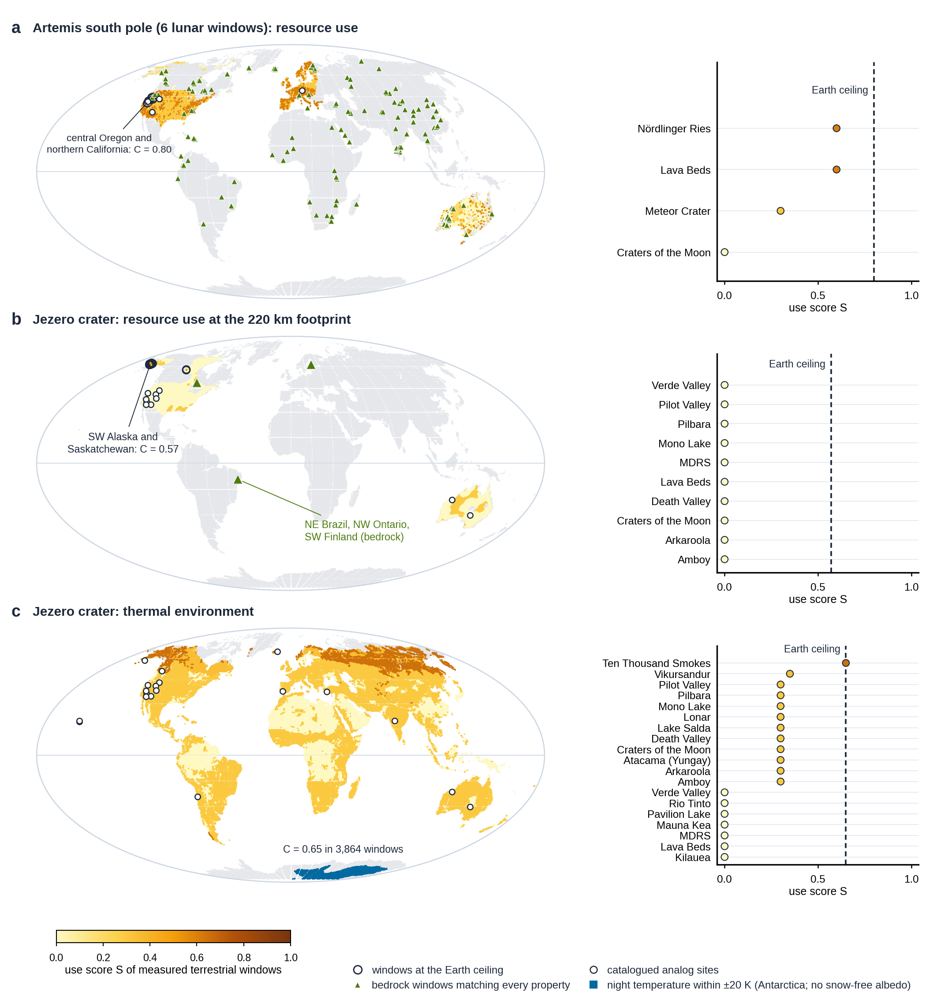
| Use | Earth ceiling | Field sites supply | Must come from elsewhere | Recommended setting |
|---|---|---|---|---|
| Mobility and trafficability | 1 (all queries) | Matched roughness at many sites | – | Field sites chosen by measured roughness |
| Lunar highland and polar feedstock | 0.80 | FeO, TiO₂, Th (Oregon, California) | Lunar-level K | Earth material with K adjusted in simulants |
| Lunar mare feedstock (oxygen from ilmenite) | 0.40 | K and Th only | Ti and Fe at mare levels | Laboratory simulants |
| Martian basaltic feedstock | 0.57 | K and Th (Alaska, Saskatchewan) | Fe-rich chemistry | Reference materials and simulants |
| Martian surface thermal environment | 0.30–0.65 | Daytime T and albedo (boreal windows) | Nights below ≈185 K | Thermal chambers; Antarctic plateau for night T |
| Lunar polar illumination and cold traps | none | Prolonged low sun (partial) | All-day low sun; ≈25 K | Thermal-vacuum facilities |
All models were trained by the team on open data, are small enough to run on CPU at serving time (the GPU is reserved for the language model), and are reported with their pre-registered evaluations. Model outputs that failed their frozen tests are not shown to users.
| Model | Size | Input → output | Evaluation |
|---|---|---|---|
| Tiny terrain encoder | 6,424 parameters (3-layer CNN + MLP) | DEM window (elevation, slope) + relief → 24-d unit embedding; cosine similarity scores every Earth window of the same size | Terrain shape alone has limited analog power at km scale (Section 5.5); used as one ranking signal, never alone |
| Lunar crater-centre heads | Small radial residual CNNs (20 and 40 km) | DEM window → crater-centre score | Balanced-sample classification score, labelled as not a calibrated probability; references the Robbins lunar crater database |
| SysOne-Nano | 171,522 parameters | 64 terrain patch tokens + 4 material percentile axes (albedo, ferric, mafic, hydrated; missing axes get a learned embedding) → typed answers (basaltic terrain, volcanic setting, …) | Frozen cross-body test against the lunar geologic map: AUC 0.90 (basaltic terrain), 0.86 (basaltic volcanic setting). Evidence only, not ranking |
| PitChain-C2F coarse stage | Gate + terrain encoder | Earth windows within 60 km of a basaltic Holocene volcano (Smithsonian GVP) first, ordered by terrain cosine | 18 known lava-tube fields: recall@200 31% vs 2% for the encoder alone and 1% random |
| Analytic pit teacher | No learning | 1–5 m DEM → closed depressions; collapse pits separated from craters by geometry and linked into chains (angle-constrained MST) | Supervises F-Net only; never used as evaluation truth |
| F-Net v2 skylight detector | U-Net, 1 input channel | LROC NAC / HiRISE image → pit / skylight map; trained on synthetic shaded renders of lidar and DTMs | Blind pixel AP: Moon 0.0055 (LoG baseline 0.0026); Mars zero-shot 0.0083 (0.0019) |
| Earth material inference | Spatial model | Lithology, dryness, climate, soil and nearby observed windows → albedo, ferric, mafic, hydrated percentiles (works under vegetation, cloud or snow) | Spatial-block CV on 3,488 windows: Spearman ρ albedo 0.70, ferric 0.80, mafic 0.48, hydrated 0.42 (nearest-neighbour 0.65 / 0.75 / 0.47 / 0.35) |
| Chemistry estimators | Gradient-boosted trees + conformal intervals | Chemistry-free covariates → K, Th, FeO, TiO₂ with 90% intervals | R² 0.32–0.64 within 300 km; intervals cover 90–93%; fail across continents |
| Chat-search spec writer | Llama 3.2 1B, LoRA fine-tuned | User message → JSON search spec (target, body, conditions must / prefer / avoid, region, exclusions) | Output outside the closed vocabularies is rejected; ranking is rule-based, so the model never invents a site |
SysOne-Nano encodes the window once and answers several typed questions in one parallel pass. Values are reported as within-body percentiles (a lunar query against 60,000 Moon windows, a Mars query against 40,000 Mars windows, an Earth candidate against all Earth windows), because the frozen test validated ranking, not a cross-body probability.
For Mars, windows that are bright and ferric (OMEGA albedo percentile ≥ 0.75 and ferric percentile ≥ 0.6, a rule fixed before any evaluation) are treated as dust-mantled. Their bedrock mafic level is then inferred from dark, dust-poor windows within 600 km (inverse-distance mean), the same occlusion idea used on Earth for vegetated ground.
Every search (/api/search for the Moon, /api/mars-search for Mars) runs the same five-step pipeline:
Ten facets. Every consideration on the challenge page is a scored facet: A terrain, B surface material, C thermal, D sunlight, E water and ice, F dust and wind, G surface processes, H habitability, I subsurface, J operations. Each facet is the mean of its tokens; a token is 1 (match), 0.5 (partial), 0 (breaks down) or unknown (no Earth data, never counted as 0). A use is a fixed set of facet weights. Things Earth cannot reproduce anywhere (gravity, vacuum, radiation, day length) are listed as limits and never scored.
Results show the top Earth candidates as spatial groups with a 0–100 score, the known-analog label (or “new candidate”) and the evidence behind it. The comparison view drapes measured elevation with source imagery: the Moon with NASA SVS color and the LROC WAC 643 nm mosaic, Earth with Esri World Imagery under visible attribution.
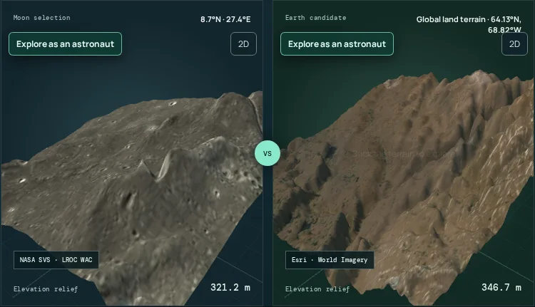
The dossier compares all candidates at a glance (dryness, bare ground, rock type, volcanic setting), explains each verdict with the query requirement and the candidate value, adds the SysOne-Nano terrain + material reading, lists what can be tested at the site (vehicle mobility, drilling, ISRU feedstock, lava-tube operations, long-duration remote operations), and shows how to get there (road, town, airport) and the field season from NASA POWER monthly climate.
For each Earth candidate the system applies the challenge’s recommended resources to the exact window:
The card is display only and never enters ranking; results are cached on disk.
The whole interface and the research pages are available in English and Traditional Chinese. React and Motion load as separate vendor chunks, and first-load JavaScript is 184 KB gzipped.
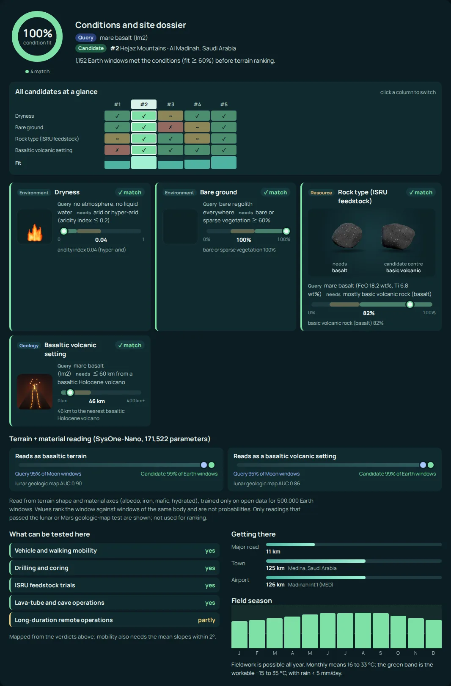
Every query and candidate can be walked on foot. The explorer loads the measured DEM, applies the body’s gravity (1.62 m/s² on the Moon), and shows elevation, slope, speed, distance walked, jump height, local time and a simulated life-support gauge. Users can call a rover, board it, scan, place a flag, switch to third person, change time and weather, take a photo, and jump directly to the Earth candidate to feel the difference. Small craters, rocks, footprints and dust are illustrative and labelled as not measured.
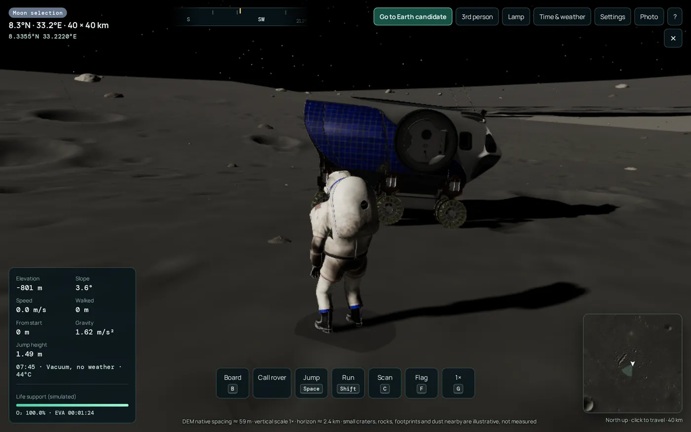
Lava tubes are candidate shelters for a permanent base. The two-stage PitChain-C2F search keeps Earth windows near basaltic Holocene volcanoes and ranks them by terrain, then runs F-Net v2 on the query’s LROC NAC or HiRISE image to mark pit and skylight candidates. Where an Earth candidate overlaps a USGS 3DEP 1 m lidar site, collapse pits are listed there as well.
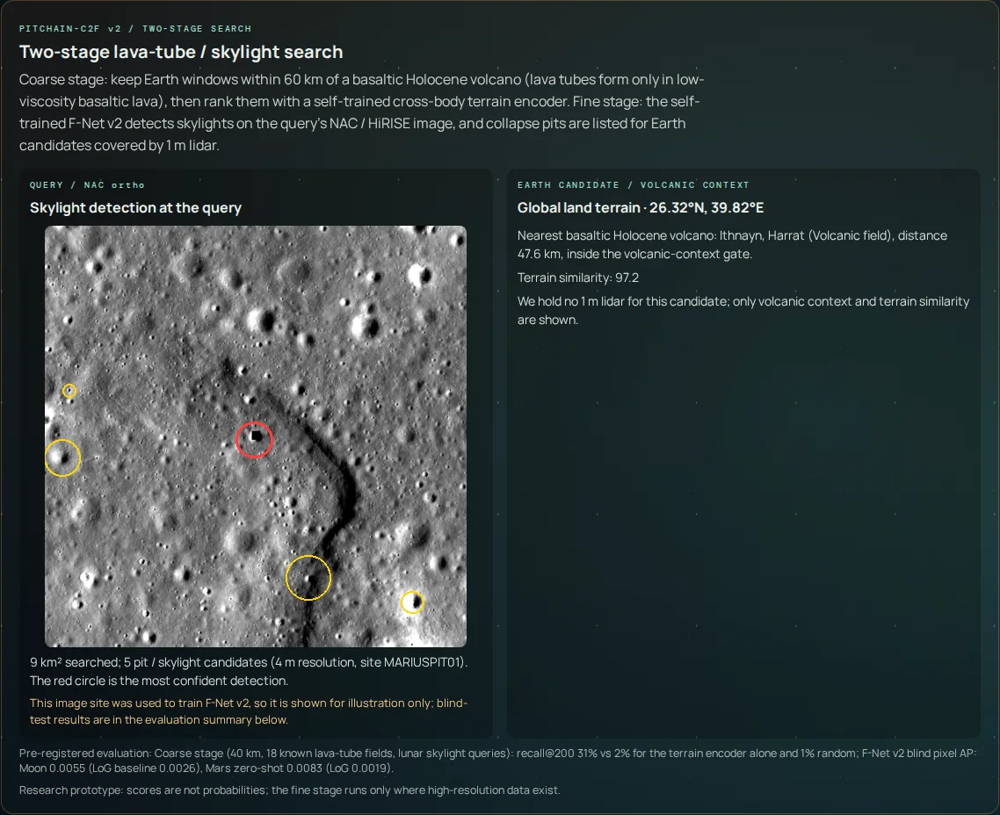
This purpose weighs terrain similarity and material similarity equally. On Mars, surface material comes from OMEGA and CRISM; on the Moon from LROC WAC and Lunar Prospector FeO. Earth material is inferred from geology, climate, soil and nearby observations, so hidden ground can still be estimated, and candidates with visible ground are checked against measured Sentinel-2 spectra.
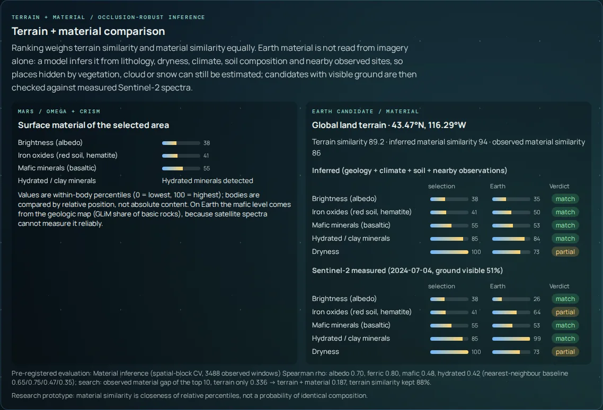
| Area | What we used |
|---|---|
| Languages | Python (server, data processing, models), JavaScript / JSX (front end), HTML / CSS |
| Back end | Modular Python HTTP server (config, query validation, resource loading, routes, search pipeline); NumPy, SciPy, scikit-learn, Rasterio, Shapely, Affine, OpenCV, Pillow, tifffile, Matplotlib |
| Machine learning | PyTorch (terrain encoder, crater heads, SysOne-Nano, F-Net v2); gradient-boosted trees with conformal intervals; Hugging Face Transformers and LoRA for Llama 3.2 1B |
| Front end | React 19, Three.js, 3D Tiles Renderer, three-mesh-bvh, Motion, anime.js, Lucide icons; built with Vite |
| Data access | NASA PDS Geosciences, USGS Astrogeology, NASA SVS, NASA POWER API, NASA Earthdata CMR, NASA Worldview / GIBS, Copernicus DEM and Sentinel via AWS Open Data and Microsoft Planetary Computer |
| Hardware and deployment | Google Cloud g2-standard-8 VM with one NVIDIA L4 GPU; the web server, the language model and a Cloudflare tunnel run as systemd services; about 71 GB of prepared data |
| Quality checks | A parity tool sends 32 requests (every search purpose on the Moon and Mars, observation endpoints, chat search and error cases) to two servers and compares the JSON responses |
TwinGround turns the question “where on Earth is like this place on the Moon or Mars?” into a measurable one. By harmonizing NASA orbital measurements and Earth surveys in units, scale and depth, it ranks Earth windows for a specific use, explains every candidate, and states the Earth ceiling: the best match Earth can offer at all. The results show that Earth readily supplies kilometre-scale terrain, but not lunar mare chemistry, Martian crustal iron, the coldest Martian nights or the polar illumination of the Moon, and that choosing analogs by setting drifts toward Earth’s continental crust. The practical outcome is a modular plan for analog work, with terrain going to field sites, chemistry to simulants and thermal regimes to test chambers, delivered through an interactive, bilingual tool that anyone can use to explore real NASA data.
/api/chat-search. It runs on the project’s own GPU VM and never ranks sites or generates site facts.TwinGround was made for the NASA Space Apps Challenge 2026. It is not an official NASA product and is not endorsed by NASA. Imagery credits: NASA/GSFC/Arizona State University (LRO), NASA/JPL-Caltech/University of Arizona (HiRISE), NASA Scientific Visualization Studio; Earth imagery Esri, Vantor, Earthstar Geographics.